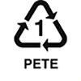
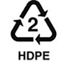
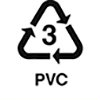
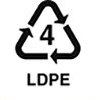
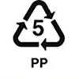
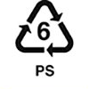
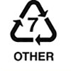

This website includes:
- An in-depth mapping function that allows for:
- Searcing by county,
- Searcing by city,
- Searcing by desired recycable material,
- And searching by a range of miles.
- The most frequently asked questions (FAQ)
- A way to contact the DEQ
- About the DEQ
- And a statistics tracker (must be logged in)
If you find the website helpful and would like to return, you can create an account and track your recycling habits! Just click on the Login/Sign Up button in the top right corner of the screen to create an account or log in, and then go to the "Recycling Statistics" page to see how much you've recycled, and what that equates to saving the environment and your wallet!
The types of materials that can be recycled in Montana, and that are able to be filtered on our map, include:
- Batteries
- Metal
- Cardboard
- Paper
- Glass
- Plastic Bags / Film / Wrap
- CFLs & Tubes
- Wood & Lawn Waste / Kitchen Compost
- Cooking Oil
- Electronics
- Automotive Fuilds & Waste Water
- Tires
- Vehicles
Symbol: PETE

Recyclable: Yes
Used in:
Soda bottles, Water bottles, Salad dressing bottles, Medicine jars, Peanut butter jars, Jelly jars, Combs, Bean bags, Rope, Tote bags, Carpet, Fiberfill material in winter clothing.
Repurposed to Make:
textiles, carpets, pillow stuffing, life jackets, storage containers, clothing, boat sails, auto parts, sleeping bags, shoes, luggage, winter coats.
Symbol: HDPE

Recyclable: Yes
Uses:
Milk jugs, Juice containers, Grocery bags, Trash bags, Motor oil container, Shampoo and conditioner bottles, Soap bottles, Detergent containers, Bleach containers, Toys
Repurposed to Make:
Plastic crates, lumber, fencing
Symbol: PVC

Recyclable: Yes - but call your recycler
Uses:
Some tote bags, Plumbing pipes, Grocery bags, Tile, Cling films, Shoes, Gutters, Window frames, Ducts, Sewage pipes
Repurposed to Make:
Flooring, mobile home skirting
Symbol: LPDE

Recyclable: Yes - but call your recycler
Uses:
Cling wrap, Sandwich bags, Squeezable bottles for condiments such as honey and mustard, Grocery bags, Frozen food bags, Flexible container lids
Repurposed to Make:
Garbage cans, lumber
Symbol: PP

Recyclable: No
Uses:
Plastic diapers, Tupperware, Kitchenware, Margarine tubs, Yogurt containers, Prescription bottles, Stadium cups, Bottle caps, Take-out containers, Disposable cups and plates
Repurposed to Make:
Ice scrapers, rakes, battery cables
Symbol: PS

Recyclable: No
Uses:
Disposable coffee cups, Plastic food boxes, Plastic cutlery, Packing foam, Packing peanuts
Repurposed to Make:
Insulation, license plate frames, rulers
Symbol: Other

Recyclable: No
Uses:
Plastic CDs and DVDs, Baby bottles, Large water bottles with multiple-gallon capacity, Medical storage containers, Eyeglasses, Exterior lighting fixtures
Repurposed to Make:
Plastic lumber (which is often used in outdoor decks, molding, and park benches
- AA (Most common)

- AAA

- C

- D

- 9-Volt

- 6-Volt (Lanterns / pet safety)

- 3-Volt (Car key / watch)

- Nickel-Cadmium (Ni-Cd) (Most rechargeable batteries)

- Nickel Metal Hydride (Ni-Mh) (Another kind of rechargeable)

- Lithium Ion (Li) (Phones / computers)

- Aluminum

- Brass

- Copper

- Steel

- Other Ferrous / Non-Ferrous Metals
Ferrous Metals contain iron in them, are magnetic, and are not as resistant to corrosion.
These metals can include:
- Steel / Carbon Steel / Alloy Steel
- Cast Iron / Wrought Iron
Non-Ferrous Metals do NOT contain iron in them, are NOT magnetic, and are more resistant to corrosion.
These metals include:
- Copper
- Brass
- Bronze
- Aluminum
- Tin, Lead
- Titanium
- Precious Metals - Gold, Silver, Platnum
- Boxes
- Plates
- Tubes
- Fiberboard
- Paperboard
- Back to top
- Back to top
- Back to top
- Back to top
- Back to top
- Back to top
- Back to top
- Back to top
- Back to top
- Back to top
- Back to top